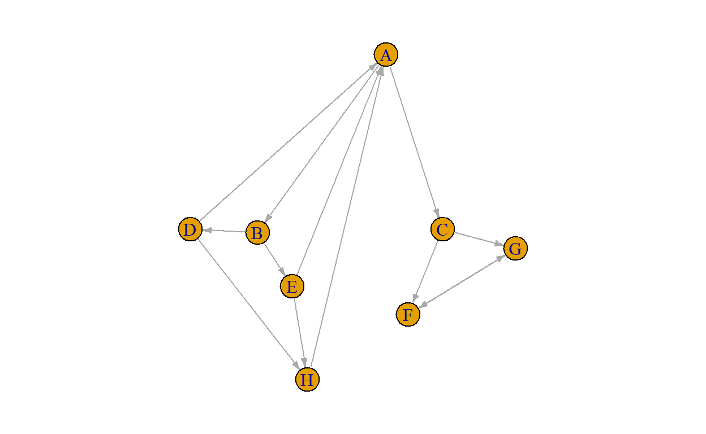

Introduction
So far, you learned the basics of R and were introduced to some first work with network data. In this tutorial, you are going to learn how to compute a bunch of statistics at the graph level and manipulate network objects a bit. Moreover, you’ll learn how to find and extract subgroups from a network.

Yep, that’s what I said
Let’s get to it.
Checking installation
Yeah, just to make sure, let’s quickly make sure you have all of the required packages installed. .
R Version
You need to have installed R version 4.2.1 and this tutorial is going
to check it for you. Please hit the Run Code button.
check_R()R Studio Version
You need to have installed a recent version of RStudio version
2022.7.1.554 or above. Let’s check by clicking
Run Code:
check_RStudio()Packages
You need to have a few packages installed. Click the
Run Code to check. It will check whether you have the
required packages installed and will attempt to install any missing
packages in case there are any (or it will advise you to upgrade
snafun).
–> This can take a few minutes.
check_pkgs()Summary statistics of networks
You are, no doubt, familiar with the concept of the “five number summary”. When you start working with any dataset, it is advisable to always start with some basic descriptives to start to get a feeling for the dataset. The Five number summary is a common starting point.
When I get new dataset, I always make such summaries (usually a bit more extensive than these five basic numbers) and do some exploratory plotting.
You should do the same with any network dataset.
Once you have your network in an object that is ready for analysis, always start with an initial exploration of the data, so you get a feel for what you are dealing with. Let’s look at some of the things you would do.
print the object
This is something you are now used to. Print it, using the print method of the package you are using for your analysis, and check whether the network is directed/undirected, weighted/unweighted, how many vertices and edges there are, and which attributes there are.
Do that here. Load the enwiki network that is included
in the SNA4DSData package. Then print it. This can take a
couple of seconds on your machine.
data('enwiki', package = "SNA4DSData")
snafun::print(enwiki)Average path length
The average path length is calculated with
snafun::g_mean_distance. Go ahead and calculate it below.
It will take some time to run on your laptop.
cat('calculate the average path length of the enwiki network')snafun::g_mean_distance(enwiki)Hmmm, why does this take so long to run?
Well, consider what
this is doing. The algorithm needs to find the shortest possible path
from any vertex to any other vertex and then take the mean of those.
That’s a lot of work, because there are a lot of pairs
of vertices.
Can you figure out how many pairs of vertices exist in
this graph?
(hint: it may be helpful to consider the graph in terms
of its adjacency matrix…)
Diameter
From the average path length to the diameter of a graph is just a small step. The diameter is the largest shortest path in the network.
It is easy to calculate. Let’s see if you can find the appropriate
function in the snafun package to calculate the diameter of
the enwiki network.
(hint: this is a measure at the graph level, so the function name probably starts with g_)
I think you are starting to find that finding the right function becomes easier every time!
As you learnt from the previous exercise, this may take a few seconds on your machine.
cat('calculate the diameter of the enwiki network')snafun::g_diameter(enwiki)OK, so you found the diameter. Can you interpret it? Do you consider it high or low (or in between)?
Let’s look at the diameter one more time. In the box below, we will
create a network and calculate the diameter on it. This is the network
from Figure 2.5 in the Easly & Kleinberg book.
Can you
understand where the numbers come from? Make sure to check out the help
for the functions. Feel free to play around with the network and the
code. Go crazy!
edges <- matrix(
c("A", "B",
"C", "E",
"D", "E",
"F", "G",
"F", "H",
"G", "J",
"G", "I",
"J", "H",
"I", "K",
"J", "K",
"K", "L",
"H", "L",
"H", "M",
"L", "M"
), ncol = 2, byrow = TRUE
) |> as.data.frame()
fig25 <- snafun::to_igraph(edges)
snafun::plot(fig25)
snafun::g_diameter(fig25)This means that every vertex can reach all of the other vertices
within 2 steps and none of the vertices need more than 2 steps to reach
all of the others. For the enwiki network every vertex can
reach every other vertex within at most 12 steps. That is actually a
lot.
Radius
If you understand what the diameter of a graph is, you’ll easily understand what the graph’s radius is. For each vertex, you first calculate the distance to the farthest vertex in the graph (from that focal vertex). Then you know for each vertex how many steps are needed at least to reach all other vertices in the network. The diameter is the maximum of these numbers. The radius is the minimum. For the small example network above, the radius is:
snafun::g_radius(fig25)Dyad census
Now, let’s look at how many ties are reciprocated. Reciprocated ties are ties that run both from vertex \(i\) to \(j\) and from \(j\) to \(i\). I buy you a drink and then you buy me a drink.
Reciprocated ties are also called mutual ties. When an edge runs in one direction, and is not reciprocated, it is often called asymmetric. I buy you a drink and then you walk away with it to join other friends…
When an edge does not occur between two vertices, this is denoted a null. (after that previous evening where I ended up paying for all of the booze, this is what will happen next time: I pay for my own drinks and you need to buy yours)
You calculate this with the function snafun::count_dyads
as follows:
snafun::count_dyads(enwiki)With these numbers, you should be able to calculate the reciprocity of the graph by hand. It is a number between 0 and 1: 0 means that not a single dyad has mutual ties. This would be the situation where there are no M’s, but there are A’s.
Reciprocity of 1 means that all ties that exist are reciprocated. In
other words: there are no A’s, but there are M’s.
For reciprocity, N’s do not matter. All we want to know is what proportion of dyads that have at least 1 tie also have a second one going in the opposite direction.
So, use the result from the dyad census above to manually calculate
the reciprocity. Then check your result using the
isnafun::g_reciprocity function. (the numbers are allowed
to differ in the third decimal or so).
## calculate reciprocity manually
## now compare with snafun's reciprocity function39660/(39660 + 113589/2)
snafun::g_reciprocity(enwiki)
# if you want to do this programatically
MAN <- snafun::count_dyads(enwiki, echo = FALSE)
MAN$Mutual / (MAN$Mutual + MAN$Asymmetric/2)transitivity
The friends of my friends are my friends.
I am sure that you have heard this before. Or:
The enemy of my friend is my enemy.
These statements no longer are about dyads, but about triads instead. A triad consists of a set of three vertices and the edges between them. In a directed graph, every triplet of vertices can be in any of 16 states, varying from an empty triad (where there are no edges between the three vertices), a direct line (A->B->C), an outstar (A<-B->C), et cetera, all the way to the complete graph (A<->B<->C, A<->C).
If you are interested, you can look at
?snafun::count_triads to see what all 16 states look like.
But we will come back to these 16 types extensively when we get into
Exponential Random Graph Models later in this course.
For today, all we are interested in is transitivity. Transitivity considers the situation in which A is friends with B and A is friends with C and calculates the probability that B and C are also friends. This is an important form of closure: the extent to which the people that you are friends with are also friends with each other.
Of course, this is not limited to friendship, but is a measure that is useful for many types of relationships, including directed ones.
You calculate transitivity through the function, believe it or not,
snafun::g_transitivity. But beware that you need to be
specific as to whether you want to use directed or undirected ties,
whether you want the transitivity score that involves a specific vertex
or you want an overall score for the network as a whole. Type
?snafun::g_transitivity to check out the help page for the
options. It will point to you to functions in the sna or
igraph packages in case you want more options. But we are
quite happy with snafun::g_transitivity and you should
rarely have to use the alternatives.
Determine the transitivity now.
cat('calculate the transitivity of the enwiki network')snafun::g_transitivity(enwiki)Mmm, how do you interpret this value? Are you surprised by it?
Network density
A very common measure of any network is its density. A network’s density is the proportion of all possible edges that are actually present in the network.
An empty network has density 0. A network where everybody is directly connected with everybody else has density 1. A network where only have of the possible ties are active has density 0.5.
You get the idea.
You should be able to calculate this measure manually. After all, you already figured out how many edges are possible in the network (you calculated this previously) and you already noticed how many edges are actually there.
Below, first manually calculate the density of the
enwiki network and then compare your results with what
snafun tells youit is–use snafun::g_density
for this.
# Below, calculate the density of the enwiki network
# Below, compare with the result from igraph itself194103/(15220*15219)
snafun::g_density(enwiki)That is very low, but this is to be expected for this network.
(in a few weeks you’ll learn how to statistically test whether this
value is indeed low or only looks like it.)
Let’s summarize
You learned about a set of statistics that summarize some of the basic characteristics of a network. Make a habit to always calculate these. If you want, you can even write a single function that does all of this for you. Or a script. Next week, we’ll add some more measures.
These are the statistics we have covered:
What you look for in the printout of the object:
graph characteristics: Directed or Undirected, Weighted or Unweighted, Bipartite/Unipartite
the number of vertices
the number of edges
which attributes do we have for the vertices?
which attributes do we have for the edges?
Separate calculations:
network density
average path length
diameter
radius
average degree
dyad census
transitivity
We already did a LOT!
Taking a shortcut
We now calculated a few measures of interest. You will find that you will often calculate the same measures for each graph you work with. This can become quite repetitive.
Wouldn’t is be wonderful if you had a single function that would calculate these measures for you in a single function call?
Hallelujah, the SNA Gods be praised: this function exists!
Actually, you already encountered it in the previous tutorial, it is
snafun::g_summary. Run it now on enwiki. It
will definitely take some time because all of those time-consuming
calculations will again be performed here. But the good thing is that
you only need to do this once for each network
info <- snafun::g_summary(enwiki)This yields a list named info and it contains the
following elements:
names(info)Extract the number of isolates from info
info$number_of_isolatesand can you get the triad census too?
info$triad_censusSubgroups
In the first lecture, we already saw this network picture of political blogs on the internet.

(source: Lada A. Adamic and Natalie Glance, “The political blogosphere and the 2004 US Election”, in Proceedings of the WWW-2005 Workshop on the Weblogging Ecosystem (2005).)
The red blogs support the Republican party and the blue blogs support
the Democrats. The edges represent blogs that link to each other.
What do you think, does this political landscape look well-mixed and
integrated?
Not exactly, the network clearly falls apart into two subgroups that are each pretty cohesive inside, but with relatively few edges between the groups.
Let’s see how we can detect subgroups/communities using
snafun.
Basics
For a good community, we want two main features:
High cohesion: communities have many internal links (so from nodes within a community to other nodes in that same community), so the nodes in the community stick together
High separation: communities are connected to each other by few links

In a strong community: each node has more ties to others within the community than to others outside the community.
In a weak community: the sum of the internal degrees of the nodes inside the community is greater than the sum of their external degrees.
What matters in these definitions is that you understand that some communities in a network can be very strong and pronounced, whereas others are less clear-cut and less strong.
Finding communities
There are dozens of ways in which one can find communities that
fulfill the requirements of high cohesion and high separation. We will
consider three algorithms that are implemented in
snafun.
Girvan-Newman
The Girvan-Newman algorithm uses edge betweenness (a topic that will be discussed later in this course).
What the algorithm does is to calculate the betweenness of all of the edges, remove an edge from the network with the highest betweenness, calculate the betweenness of all of the edges, remove an edge from the network with the highest betweenness, et cetera. The basic idea is that removing those edges that link groups together should lead to the detection of communities that are cohesive inside.
Anyway, this is implemented in
snafun::extract_comm_girvan(). When you run this, you
get
- the number of communities
- the labels of which community each node is assigned to
- the modularity
This modularity is the difference between the number of
internal links in the community and the expected value of this number in
the set of randomized networks used as baseline.
Why compare with
randomized networks? Because randomized networks have no
communities!
A low modularity means that the community structure is much like that of a randomized graph. In contrast, if the number of edges within the communities is much larger than its expected random value, it is unlikely for such a concentration of edges to be the result of a random process, and the modularity will be high.
The bottom line? The higher the modularity, the better the partitioning into communities.
Often, researchers will use multiple community detection algorithms and pick the one with the highest modularity, an approach known as modularity optimization.
This algorithm is meant for undirected graphs, so you may get a warning if you use it on directed graphs.
We are going to work with the discuss network. This is a
network of politicians and measures who goes to whom to discuss current
political matters. The politicians in this network belong to four
different political streams and are colored as such.
snafun::print(discuss)
snafun::plot(discuss)Now, try the Girvan-Newman algorithm and see if you find some good communities.
girvan <- snafun::extract_comm_girvan(discuss)
# check the modularity
igraph::modularity(girvan)
# check which community each vertex belongs to
igraph::membership(girvan)
snafun::plot(girvan, discuss)How many communities did you find? Do they make sense?
BTW, did you notice that we extracted the communities using
snafun::extract_comm_girvan, but you could extract details
from the output using the igraph functions. Quite handy,
would you agree?
This works for all of the community extraction algorithms inside
snafun!
Louvain
The Louvain algorithm is quite complicated internally. But the essence is that it begins with assigning each vertex to its own community and then moves nodes to join other communities, based on which move would increase the modularity the most. In theory, I say: in theory, this should give us communities with excellent modularity.
Oh, and this algorithm is meant for undirected graphs, so you may get a warning if you use it on directed graphs.
Let’s try it out.
louvain <- snafun::extract_comm_louvain(discuss)
# check the modularity
igraph::modularity(louvain)
# check which community each vertex belongs to
igraph::membership(louvain)
snafun::plot(louvain, discuss)Any better? Do you see the differences in which nodes are assigned
together?
In this case, we are working from a network that is quite
clearly segmented already, so all algorithms should give decent results
here. This is always the case when communities are strong.
Walktrap
My personal favorite. Why? Because it follows a cool idea that makes such intuitive sense.

Imagine you are dropped somewhere on the network.
You have no clue what the network looks like, so you start walking and walking. Every time you come to a vertex, you write down the name of that vertex on a piece of paper.
Then you continue walking by randomly picking one of edges that lead
away from this vertex.
Oh, and you always adhere to the directions:
in a directed network, only walk across edges in the direction they are
pointing.
In an undirected network, you can walk in any direction across the edges. In a weighted network, the probability of choosing a specific edge is proportional to its weight: the higher the weight, the larger the probability of picking that edge to continue you walk on.
All of your choices of which edges to walk are completely random, but you never jump to a different place in the network, you always continue walking from where you are.
After having walked around like this for some time, you may start to notice that you are constantly going through the same set of vertices.
Having walked around for awhile, you are removed from the network and again dropped on top of it at a random vertex. And you start walking again and making notes of which vertices you cross. You do this in a fresh list, each time.
Anyway, after having made a lot of such random walks across the network, you will start to notice that a certain group of nodes tend to co-occur within walks and another group of nodes also co-occur, et cetera. These are the communities.
Compare it to people telling each other a secret. Imaging that you tend to share your secrets with Jenny and Jenny tends to tell her secrets to Peter and Ezra. Ezra and Peter tend to share their secrets with you. Then, this process will lead to your secret reaching you again. If this happens a lot, the four of you are a community.
A walktrap community is especially useful to measure how information travels through a network: the more and the stronger the communities, the more information tends to get “trapped” inside subgroups within the network.
Now you understand the name of the algorithm.
Long story short, you run snafun::extract_comm_walktrap.
The steps argument specifies the length of each random
walk.
walktrap <- snafun::extract_comm_walktrap(discuss)
# check the modularity
igraph::modularity(walktrap)
# check which community each vertex belongs to
igraph::membership(walktrap)
snafun::plot(walktrap, discuss)This is a different kind of approach to finding subgroups. A more
intuitive one. As you can see, it gives slightly different results. Does
it make sense to you?
Bipartite networks
As you will recall from the previous tutorial, a bipartite network (also called a bimodal network or a two-mode network) is a network with two kinds of nodes, where edges run only between nodes of different kinds.
Examples include students and the parties they go to. Elephants and the puddles they drink from. People editing Wikipedia pages. Artists and the festivals they play at. Who is on which episode of De Slimste Mens or companies that use specific customer support software or books that deal with specific topics.
You get the picture.
 (a picture
of us, in this case
)
(a picture
of us, in this case
)
vertex attributes
Let’s return to the judge network you saw last week, it
is a network of judges and cases they worked on. This is obviously a
bipartite network.
Because there are two types of vertices in the network, we need to
have a way to figure out which is which. In this network, we need to be
able to know whether a specific node is a judge or a case. It is not
strictly necessary to do so, but it is common practice to include a
vertex attribute called type in a bipartite network object for
this purpose. This attribute is usually logical (ie. TRUE
or FALSE). It is TRUE for one type of node and
FALSE for the other.
Extract the type attribute and make a table for it.
cat('Extract the "type" attribute and make a table for it. ')snafun::extract_vertex_attribute(judge, "type") |> table()There are, of course, a lot more cases than there are judges. So, which value of type represents a judge and which represents a case?
Wonderful.
Projection
Often, we find it a lot easier to work with unimodal / unipartite networks. So, rather than considering the edges between judges and cases, we could be interested in a network of judges: who works on the same case? This might indicate similarity in expertise or interest.
Or we could consider the network of cases: which cases are assigned to the same judge? This might indicate similarity about their topics or the kinds of offences they relate to.
Collapsing a bipartite network to a unipartite network is called
projection. At the moment, there is no function for projection
in snafun (but it is on our to do list!), so let’s use
igraph::bipartite_projection for this purpose.. Ah well, it
makes it easy to find.
There are several arguments–check them out with
?igraph::bipartite_projection, but you don’t need to mess
with them. Use the defaults and you are good to do.
Do that now:
cat('Project judge-net-bp so a one-mode network. ')igraph::bipartite_projection(judge)This actually creates TWO networks: a network of judges that have worked on a case together and a network of cases that had a judge in common. Can you see which is which?
You can just extract a single network using the which
argument of the function. I’ll use that below, to give you example of
that.
Quick plotting this network creates something that is indeed quite different from the previous plot we did.
judge_net <- igraph::bipartite_projection(judge, which = TRUE)
snafun::plot(judge_net, vertex.label = NA,
vertex.sizes = 1, layout = igraph::layout.fruchterman.reingold)Not all judges are connected, as you can see.
Now that you non longer are dealing with bipartite networks, you are back on familiar territory and can compute all of the measures you have learnt about on each of the two networks you now have.
Vertex centrality
We will, very briefly, give you some code for calculating measures for the vertices. The lecture already introduced the main concepts, so we can keep this short.
Eccentricity
The eccentricity measure is one that we actually started this tutorial with.
Remember how we talked about the diameter and the radius of a network? These are calculated based on the eccentricity scores of the vertices.
The idea is simple. Take a vertex. Then calculate the distance from that vertex to each other vertex in the network. The largest value is the eccentricity of the vertex.
It measures the maximum number of steps that this vertex needs to reach everyone else.
Let’s continue our work with the network of the judges, the ties between them are co-workership relations.
Determine the eccentricity of each judge.
snafun::v_eccentricity(judge_net)Oh, and the relationship with diameter and range? See if you can figure it out:
Beautiful. You have become quite eccentric yourself!

Stress centrality
The stress on a vertex is a relevant measure in physical networks (e.g., networks of roads, energy cables, water pipes, etc.) or in networks where the amount of flow through the edges can be taxing on the the vertices. An example would be a network where so much information is exchanged, that vertices may become cognitively overloaded.
The stress centrality of vertex \(v\) is the number of shortest paths between all dyads in the network that pass through \(v\) (except paths to or from \(v\)).
Conceptually, high-stress vertices lie on a large number of shortest paths between other vertices; they can thus be thought of as “bridges” or “boundary spanners” and may experience high cognitive stress (in case of information networks) or physical stress (in case of physical flow networks).
Determine the stress of each judge.
snafun::v_stress(judge_net)You see that many judges do not even lie on a shortest path between others, they are simply not very central. But a few are on many shortest paths. You can imagine that they are probably the most knowledgeable and/or have expertise that is of use to many of the other judges.
Let’s visualize who they are.
Here, we color the judges with a positive stress value red and size the vertices according to their stress level (actually, the square root of it).
stress <- snafun::v_stress(judge_net)
color <- rep("green", snafun::count_vertices(judge_net))
stressful_judges <- which(stress > 0)
color[stressful_judges] <- "red"
snafun::plot(judge_net, vertex.color = color, vertex.size = sqrt(stress))
# or, somewhat clearer in terms of what is going on
snafun::plot(judge_net, vertex.color = color, vertex.size = sqrt(stress),
layout = igraph::layout.reingold.tilford(judge_net))Centrality on the internet
“And now, for something completely different.”
(Recognize the movie reference? The clip here is not
part of the course and feel free to skip it, but I can use a humorous
break every now and then).
OK, back to serious (albeit intellectually
entertaining) topics.
It makes sense to consider the internet as a network of pages that point to each other. That fits within the framework if this course. Here is a visualization of the developing internetwork over time.
Gorgeous! There is a lot of research underlying this, see here if you are interested.
You can calculate the same centrality measures for the vertices of this network that we have already discussed in this course. However, within the context of internet search, these measures may not be the most useful. In this case, users are searching for the most prominent pages and are looking at Google (and other search engines) to put the best pages (that are connected to a specific topic) on the top of the search result list. So, how does Google decide what page goes to top, to the second place, et cetera?
The first task is non-network related: Google crawls the internet continuously and tags web pages according to the topics they relate to. How they do that is outside the scope of this course. Then, given a list of pages, how do we determine how prominent each page is?
Google does this as follows.
- Assume that if page A points to page B, then page B is probably relevant to A.
(In a websearch context, relevance and importance are similar concepts)
If many pages point to page B, B is probably a very and widely relevant page.
If page B is pointed to by unpopular/not-relevant page A, that does not add much importance and relevance to B.
If B is pointed to by popular page A, this makes B probably even more important.
In other words: page B inherits its importance from the importance of the pages pointing to it.
That makes sense.
Simple algorithm
A simple way to implement this is as follow:
In a network with \(n\) nodes, give all nodes initial PageRank \(1/n\)
Choose a number of steps \(k\)
Perform a series of \(k\) updates, each time as:
Each page divides its current PageRank equally across its outgoing links and passes these equal shares to these links (if a page has no outgoing links, it passes all its current PageRank to itself.)
After all nodes have done this, the new PageRank of a page is the sum of scores it just received.
This means that the total PageRank remains constant, it just moves around between the nodes until an equilibrium is reached.
Implementation
Let’s consider a small 8-vertex network, we call it
internet. It looks as follows:

Now, with the algorithm above, try to calculate by hand what the next values are. So: all vertices start with PageRank 0.125 (=1/8). Page A has two outgoing edges (to B and C), so it “donates” 0.0625 (=1/16) to each.
Page B points to pages D and E, so it donates 0.0625 to each. Andsoforth. After each page has donated its initial 0.125 to the other pages, calculate how much each page now has. Since PageRank is only re-allocated, the new PageRank scores should still add up to 1.
Give it a go and click “Continue” once you are done to check your result.
After the first iteration
If you calculated it correctly, you should have arrived at this results after 1 iteration of re-allocation of PageRank scores.
| fromA | fromB | fromC | fromD | fromE | fromF | fromG | fromH | Total | |
|---|---|---|---|---|---|---|---|---|---|
| A | 0.0000 | 0.0000 | 0.0000 | 0.0625 | 0.0625 | 0.125 | 0.125 | 0.125 | 0.5000 |
| B | 0.0625 | 0.0000 | 0.0000 | 0.0000 | 0.0000 | 0.000 | 0.000 | 0.000 | 0.0625 |
| C | 0.0625 | 0.0000 | 0.0000 | 0.0000 | 0.0000 | 0.000 | 0.000 | 0.000 | 0.0625 |
| D | 0.0000 | 0.0625 | 0.0000 | 0.0000 | 0.0000 | 0.000 | 0.000 | 0.000 | 0.0625 |
| E | 0.0000 | 0.0625 | 0.0000 | 0.0000 | 0.0000 | 0.000 | 0.000 | 0.000 | 0.0625 |
| F | 0.0000 | 0.0000 | 0.0625 | 0.0000 | 0.0000 | 0.000 | 0.000 | 0.000 | 0.0625 |
| G | 0.0000 | 0.0000 | 0.0625 | 0.0000 | 0.0000 | 0.000 | 0.000 | 0.000 | 0.0625 |
| H | 0.0000 | 0.0000 | 0.0000 | 0.0625 | 0.0625 | 0.000 | 0.000 | 0.000 | 0.1250 |
| 0.1250 | 0.1250 | 0.1250 | 0.1250 | 0.1250 | 0.125 | 0.125 | 0.125 | 1.0000 |
But we are not done. The idea is to continue this until convergence. So, let’s start from the current division of PageRank scores and start re-allocating again.
So, A starts with 0.500 and hence gives 0.025 to B and C each. B starts with 0.0625 and thus gives 0.03125 to both D and E. Et cetera. Go for it and calculate this by hand again. No worries, this is the last iteration we’ll do by hand!
When you are done, click “Continue” to check your work.
After the second iteration
| fromA | fromB | fromC | fromD | fromE | fromF | fromG | fromH | Total | |
|---|---|---|---|---|---|---|---|---|---|
| A | 0.00 | 0.00000 | 0.00000 | 0.03125 | 0.03125 | 0.0625 | 0.0625 | 0.125 | 0.31250 |
| B | 0.25 | 0.00000 | 0.00000 | 0.00000 | 0.00000 | 0.0000 | 0.0000 | 0.000 | 0.25000 |
| C | 0.25 | 0.00000 | 0.00000 | 0.00000 | 0.00000 | 0.0000 | 0.0000 | 0.000 | 0.25000 |
| D | 0.00 | 0.03125 | 0.00000 | 0.00000 | 0.00000 | 0.0000 | 0.0000 | 0.000 | 0.03125 |
| E | 0.00 | 0.03125 | 0.00000 | 0.00000 | 0.00000 | 0.0000 | 0.0000 | 0.000 | 0.03125 |
| F | 0.00 | 0.00000 | 0.03125 | 0.00000 | 0.00000 | 0.0000 | 0.0000 | 0.000 | 0.03125 |
| G | 0.00 | 0.00000 | 0.03125 | 0.00000 | 0.00000 | 0.0000 | 0.0000 | 0.000 | 0.03125 |
| H | 0.00 | 0.00000 | 0.00000 | 0.03125 | 0.03125 | 0.0000 | 0.0000 | 0.000 | 0.06250 |
| 0.50 | 0.06250 | 0.06250 | 0.06250 | 0.06250 | 0.0625 | 0.0625 | 0.125 | 1.00000 |
Did you get it right? If so, you clearly understand the algorithm.
If we do this for enough steps, the PageRank scores will converge to
stable values. Luckily, and unsurprisingly, there is an
igraph function that does this for us. Can you guess its
name? Once again, the name is very straightforward:
snafun::v_pagerank. The function has a bunch of arguments
and in most cases the default values are excellent. But in this case we
are going to deviate from those just a bit (by setting
damping to 0.999; I will explain this to you in a few
minutes).
Try it out below.
snafun::v_pagerank(internet, damping = .999)You see that the final PageRank scores all correctly add up to 1 (see
value) and that page A gets the largest share of this
(4/13), pages B and C get half of that (2/13), and the others all
equally divide the rest (1/13 each).
That makes sense: page A is pointed to by far the most of all of them. Page A itself points only to B and C, so these most be quite prominent as well. The remaining crumbles of the cake are left for the other pages. Cool. Done, right?
Well, not entirely. In reality, this algorithm is not sufficiently
robust against a case that happens a lot on the WWW where the “wrong”
pages end up with all/most of the PageRank. Let’s examine this case by
making a simple change to the network: we make F and G point to each
other and no longer to A. We call this graph internet2.
This is what it looks like.
## IGRAPH a5f9dc3 DN-- 8 13 --
## + attr: name (v/c), code (v/c)
## + edges from a5f9dc3 (vertex names):
## [1] 1->2 1->3 2->4 2->5 3->6 3->7 4->1 4->8 5->1 5->8 6->7 7->6 8->1
Can you already guess what happens? All of the PageRank that A sends to C (which is half of the PageRank A has in each iteration of the algorithm) ends up “getting trapped” between F and G. In each iteration, A continues to get PageRank from E and that then also ends up at F and G. After a while, F and G have monopoly over PageRank.
Calculate the final values for this network:
snafun::v_pagerank(internet2, damping = .999)As you can see, F and G have essentially eaten up almost the entire cake and left only very few crumbs for the rest. That is a huge change, after only making such a small change to the network!
This is not fair. Even though A now has fewer incoming ties, it should not get so little PageRank. And it becomes a problem in almost any real network to which PageRank is applied: as long as there are small sets of nodes that can be reached from the rest of the graph, but have no paths back, then PageRank will build up there.
How to solve this? Well, the solution is actually very simple. If we think about the question of why all the water on earth doesn’t all run downhill and remain exclusively at the lowest points, it’s because there’s a counter-balancing process at work: water also evaporates and gets rained back down at higher elevations.
We can use this idea for PageRank as well. What we do is pick a damping factor s between 0 and 1. We then replace the previous PageRank algorithm with the following:
Apply the Basic PageRank algorithm
Then scale down all PageRank values by a factor of s. This means that the total PageRank in the network has shrunk from 1 to s.
Then divide the residual 1 − s units of PageRank equally over all nodes, giving (1 − s)/n to each.
This rule also preserves the total PageRank in the network, since it is just based on redistribution according to a different “water cycle” that evaporates 1 − s units of PageRank in each iteration and rains it down uniformly across all nodes.
Remember that A ended up with 0.5 PageRank after the first iteration, when you calculated this by hand above? When we apply damping, say with a value of 0.8, we rescale this PageRank to .5 * .8 = .4 and do the same for all the nodes. Together, they then have a PageRank of 0.80. What do we do with the “missing” 0.2 PageRank? We divide that back to the nodes. There are 8 nodes in our network, so each gets 0.20/8 = 0.025 from this pool. Hence, A ends up with 0.5 * 0.8 + .025 = 0.425. After we have given each node their “bonus” 0.025, total PageRank again sums to 1. Then we start again, applying this damping after each iteration.
This approach again converges after a large enough number of steps. Notice, of course, that the final distribution of PageRank values of each page is affected by our choice of damping factor s (but the sum is always 1).
This is the version of PageRank that is used in practice by Google (and in some other search engines as well). Google use a damping factor that is between 0.8 and 0.9.
When we calculated the PageRank’s above, we set damping
to 0.999 (which is essentially 1, but the value 1 sometimes yields
convergence challenges, hence the use of 0.999), this is equal to the
algorithm without any damping. The lower the damping factor (ie the
closer to 0), the more damping occurs.
In general, the use of the damping factor makes the algorithm robust against some other oddities of the WWW, so the damped version is the one in common use and is the one that drives the search results when you perform you next search on Google.
Ah, just to make sure, let’s calculate the PageRank values with this
updated approach. Use a damping factor of 0.85, which is also the
default for igraph::page_rank. Do this below, and see that
it works.
For the original internet network:
cat("calculate the PageRank scores for the 'internet' network, with a damping factor of 0.85")snafun::v_pagerank(internet, damping = .85)Nice, that is quite close to the original PageRank score we found for this network, without damping.
And for the problem-causing internet2 network:
cat("calculate the PageRank scores for the 'internet2' network, with a damping factor of 0.85")snafun::v_pagerank(internet2, damping = .85)What do you think: could we also meaningfully apply the algorithm to a network of people, rather then to a network of webpages? When? What would it mean? That would make for an awesome exam question.
And we’re done
You did a great job. This is interesting stuff, right?
Next week, we’ll discuss this material in the lab (make sure to do the homeplay for “Network Measures”). Next week, we’ll conclude the descriptive / introductory part of the course and will dive deep into statistical models of networks after that.
See you in class and I am looking forward to continuing our journey together!